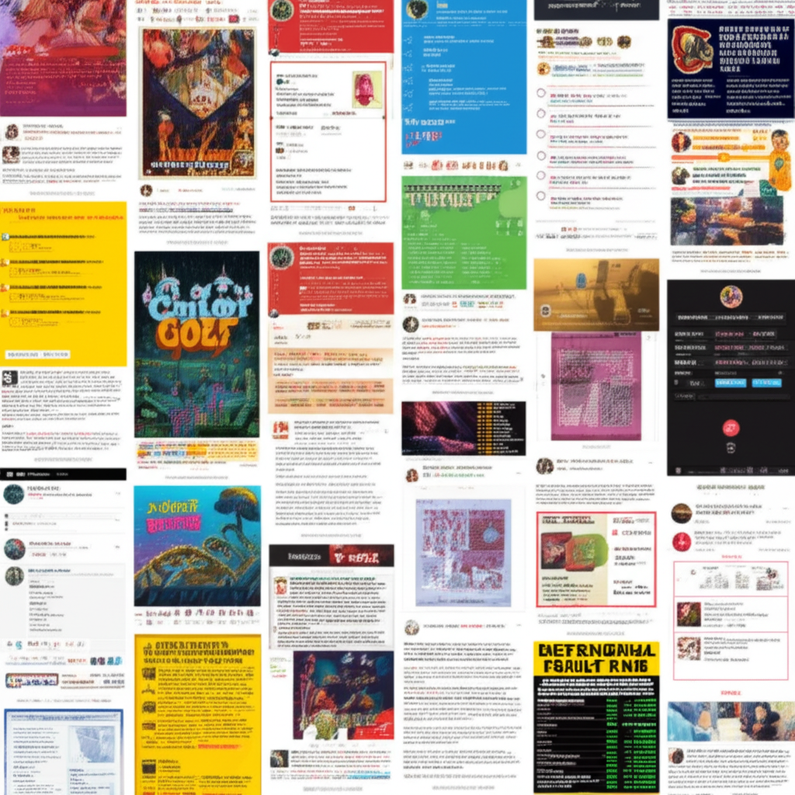

# 近期新聞摘要與分析
## 引言
這份報告彙整了近期（約過去一天至數小時內）的網路新聞資訊，涵蓋財經、教育、科技、政治等多個領域。我們將分析這些新聞的重點，並嘗試找出潛在的趨勢和關聯。
## 主體內容
### 第一點：財經動態與投資市場
近期財經新聞聚焦於總經指標、股市行情和投資策略。《NOWnews今日新聞》作為台灣大型新聞網站，可能報導了最新的財經政策或市場分析。MacroMicro 財經M平方強調總經數據的整理，顯示市場對於總體經濟狀況的關注。經濟日報報導了6月2日的重要財經行事曆，包括 PMI 發布、無薪假統計、法人說明會等，這些事件將直接影響市場走勢。此外，Facebook 上有關於 ETF 成分股調整的文章，暗示投資者正密切關注 ETF 的配置變化。最後，金銀比逼近100，專家認為白銀被低估，提供潛在的投資機會。
### 第二點：教育與地方資訊
多所學校網站釋出了相關資訊，例如屏東科技大學圖書館公告閉館整理時間，大橋國小發布午餐資訊和行事曆，以及九曲國小公告幼兒園招生訊息和行事曆。這些新聞反映了地方教育機構的日常運作和對學生的服務。雖然看似分散，但都體現了各學校為了提供更完善的教育環境所做的努力。
### 第三點：政治與社會事件
三立新聞網 Threads 上的貼文提及世壯運台灣被消音事件，以及對政治人物的批評，反映了台灣社會對政治事件的關注和討論。維基百科對2025年的條目更新，通常包含重要的政治、社會和文化事件預期，也可能關聯到當前的社會氛圍。
## 結論
從這些新聞片段中可以看出，近期網路資訊呈現多元化的趨勢，涵蓋財經、教育、政治等各個面向。財經新聞顯示市場對總經數據和投資機會的高度關注。教育新聞則反映地方教育機構的日常運作。政治新聞體現社會對熱點議題的討論和對政治人物的評價。整體而言，這些新聞片段共同勾勒出一個動態且複雜的社會圖景。